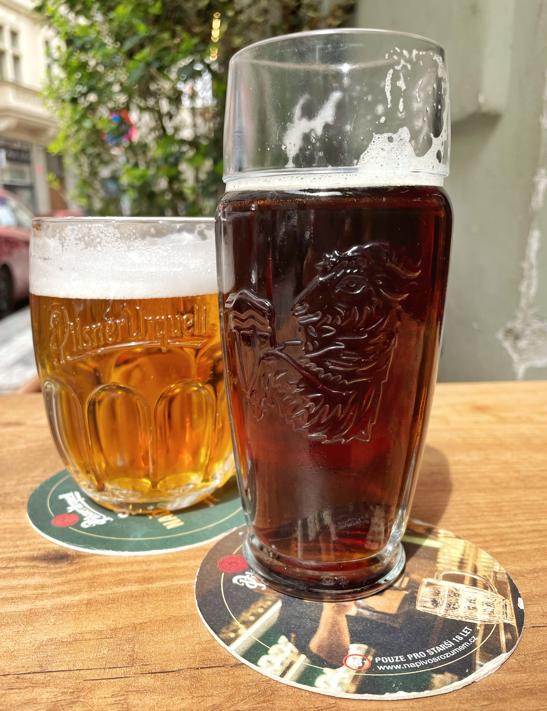
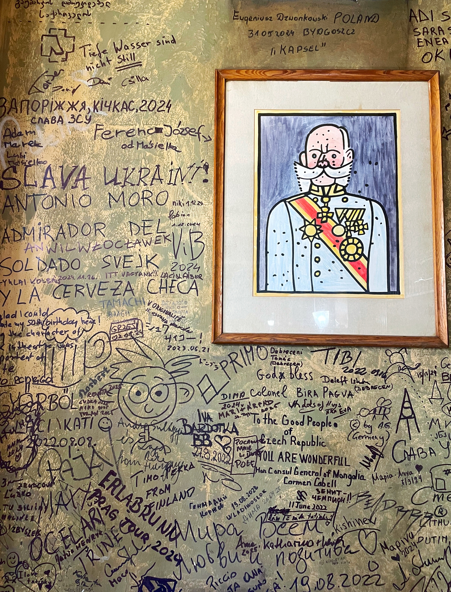
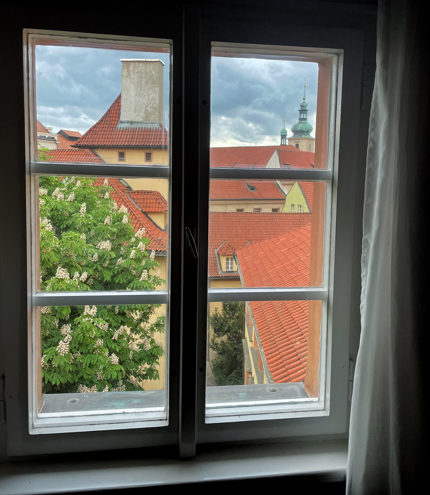

Ресторан "У Голема" (U Golema)
Сидимо в ресторані "У Голема" — і на дверях висить мезуза. Це невеликий футляр із пергаментом, де вручну написані уривки з Тори (молитва "Шма Ісраель"). Євреї кріплять її на правий косяк дверей — верхнім кінцем усередину дому.
Назва закладу одразу пов'язує з легендою: у XVI столітті в Празі жив рабин Єгуда Лев бен Бецалель (Maharal) — мудрець і кабаліст. За легендою, він створив Голема — велетня з глини, щоб захищати єврейську громаду від погромів. Голем ожив завдяки святому імені Бога, написаному на пергаменті — його клали йому в рот або на лоб. З часом Голем став неконтрольованим, і рабин видалив ім'я — Голем розсипався на порох. За переказами, його рештки досі лежать на горищі Старонової синагоги (Staronová synagoga) в Празі.
Кожен, хто бореться, хоче вірити, що знайдеться той, хто захистить і принесе справедливість — тому існує легенда про Голема.
Obecní dům (Обецні Дум)
Пройшли повз ресторан — і він дуже нагадував той, де працював Ян Діте у фільмі "Я обслуговував англійського короля". Виявилося — це і є він. Це дійсно був він. Сцени фільму (2006, режисер Іржі Менцель / Jiří Menzel) знімалися саме тут, у головному ресторані Обецні Думу. Будівля — визначний приклад ар-нуво, розташована поруч із готелем "Париж" (Hotel Paříž).
Богуміл Грабал (Bohumil Hrabal), роман "Я обслуговував англійського короля" (Obsluhoval jsem anglického krále, 1971, опублікований у Чехословаччині лише після 1989 через цензуру). Головний герой — Ян Діте, кар'єрист і офіціант, що мріє стати мільйонером. Він проходить через довоєнну Першу республіку, нацистську окупацію і комуністичний режим. Роман глибоко іронічний, з гротеском і критикою тоталітаризму.
U Zlatého tygra (У Золотого тигра)
Husova 228/17, Staré Město — улюблений паб Богуміла Грабала. Він проводив тут час і, очевидно, місце зберегло ту саму атмосферу, яку він описував у своїх романах.
У романі є характерний епізод: багатії цілий день сидять і сперечаються, яке пиво найкраще в Чехії — з Пльзеня (Plzeň), з Будєйовиць (České Budějovice), чи ще звідкись. Кожен доводить, що його правда єдино правильна, бо він це пиво п'є вже тридцять років. Тонка сатира на впертість і те, як у стабільному житті можна "воювати" не за ідеї, а за смак.
«Вони сперечалися цілий день, яке пиво найкраще — з Пльзеня, з Будєйовиць, чи звідкись іще — і кожен наполягав, що лише його думка правильна, бо він це пиво п'є вже тридцять років…»
"They argued all day about which beer was the best — from Plzeň, from Budějovice, or from some other place — and each insisted that only his opinion was right, because he'd been drinking that beer for thirty years…"
— Bohumil Hrabal, Obsluhoval jsem anglického krále

«Коли я побачив себе в дзеркалі з яскравим пльзенським пивом у руках, мені здалося, що я інший. Я зрозумів, що мушу перестати вважати себе маленьким і непоказним.»
"When I saw myself in the mirror carrying the bright Pilsner beer, I seemed different somehow. I saw that I'd have to stop thinking of myself as small and ugly."
— Bohumil Hrabal, Obsluhoval jsem anglického krále
Národní kavárna (Національна кав'ярня)
Зайшли до закладу — багато цитат і фотографій різних літераторів, навіть фото Карела Чапека (Karel Čapek). Виявилося, це не просто тематичний заклад — тут він справді бував.
Кав'ярня заснована у 1896 році як Imperial Café, після реконструкції 1923 року перейменована і переживала розквіт до 1928-го — стала центром культурного життя Праги. Постійні відвідувачі: брати Карел і Йозеф Чапеки (Karel і Josef Čapkové), Вітезслав Незвал (Vítězslav Nezval), Ярослав Сейферт (Jaroslav Seifert), Фердинанд Пероутка (Ferdinand Peroutka), Владислав Ванчура (Vladislav Vančura). Інтер'єр зберігся: бордові меблі Честерфілд, мармурові столи, стільці Тонет, кришталеві люстри.
Неймовірно — таке відчуття, ніби сидиш поруч із Чапеком або Сейфертом і ловиш уламки їхніх думок у повітрі.
Сидячи там, прийшла думка: це Чапек казав, що русня все навколо поспішає назвати слов'янським, щоб потім все слов'янське назвати російським? Виявилося — точної такої цитати немає, але суть цілком чапеківська.
Карел Чапек (Karel Čapek) про Росію. Зі збірки "Листи з Росії" (Listy z Ruska):
«В сергієвському монастирі я спостерігав неуцтво і забобонність православ'я; і цим хотіли слов'янофіли врятувати Слов'янство! Загалом я виніс з Росії те саме, що й Гавлічек: любов до російського народу і відразу до офіційної політики та панівної інтелігенції».
«V sergijevském klášteře jsem byl hostem u otce igumena — pozoroval jsem tu nevědomost a pověrčivost pravoslaví; a tím chtěli slavjanofilové zachránit Slovanstvo! Celkem jsem si z Ruska odnesl totéž co Havlíček: lásku k ruskému lidu a odpor k oficielní politice a panující inteligenci.»
— Karel Čapek, Listy z Ruska
Мілан Кундера (Milan Kundera) в есе "Викрадення Заходу" (Un Occident kidnappé, 1983) писав, що Центральна Європа, включно з Чехословаччиною та Україною, була "викрадена" Росією — і має більше спільного із Заходом.
Петр Павел (Petr Pavel) — перший іноземний президент, що відвідав схід України після початку повномасштабного вторгнення. Петр Фіала (Petr Fiala) у 2022 разом із лідерами Польщі та Словенії відвідав Київ.
Чехи та українці — спільне:
- XV ст.: українці брали участь у гуситських війнах (husitské války) на боці чехів.
- Гетьман Пилип Орлик, автор першої української конституції, походив із чеської родини.
- XIX ст.: чеські колоністи заснували поселення на Волині, Поділлі та в Криму.
- Міжвоєнний період: Прага стала центром української політичної еміграції — тут діяли Український вільний університет та Українська господарська академія.
- 2022: Чехія прийняла сотні тисяч українських біженців. Немає ніякої "Східної України" чи "Західної України" — є схід і захід України, бо Україна єдина.
U Kalicha (У Келиха / У Чаші)
Дуже смачно, порції величезні. Давно не пив пиво — але місцеве неймовірно гарне.
Kalich чеською — келих, чаша. Але тут є глибший шар: чаша — головний символ гуситів XV ст. Вона означала право мирян приймати причастя вином, як і духовенство — тобто рівність. Гуситів тому й називали "каліксти" (від лат. sub utraque specie — "в обох видах"). Тобто заклад, де Швейк домовлявся зустрітися після війни, носить ім'я символу середньовічного чеського спротиву. Ти п'єш пиво з келиха — символу рівності й спротиву — а на стіні поруч Швейк з посмішкою, яка пережила всі імперії.
Ярослав Гашек (Jaroslav Hašek) і Швейк. Osudy dobrého vojáka Švejka za světové války — The Fateful Adventures of the Good Soldier Švejk During the World War. Саме тут Швейк домовлявся зустрітися після війни.
«Po válce — v šest hodin v U Kalicha…»
«Після війни — о шостій у "У Калиха"...»
"After the war — six o'clock, U Kalicha."
«Ježíš Kristus byl taky nevinný, ale přesto ho ukřižovali. Nikdy se nikdo nestaral o to, je-li člověk nevinný.»
«Ісус Христос теж був невинний — але все одно його розіп'яли. Ніхто ніколи не турбувався про те, що людина невинна.»
"Jesus Christ was also innocent, but he was crucified nonetheless. Nobody ever cared whether a man was innocent."
«V armádě rozum nesmí být, musí se poslouchat a nemyslet.»
«В армії розум — це шкідлива штука. В армії треба слухатись і не думати.»
"In the army there must be no reason — one must obey and not think."

Вежа блазнів. Сапковський
Зроблене в Празі фото викликало асоціацію з початком роману Анджея Сапковського "Narrenturm" ("Вежа блазнів", перша частина Гуситської трилогії). Роман починається з інтимної сцени між Рейневаном та Аделею фон Штерча — і паралельного опису того, що відбувається за вікном: дзвони церкви, теплий літній день, крики торговців, стукіт копит, гомін вулиці. Контраст між затишком кімнати та життям назовні, яке незабаром вторгнеться і змусить Рейневана тікати від помсти родини Штерча.
«Qui confidunt in Domino, sicut mons Sion
non commovebitur in aeternum,
qui habitat in Hierusalem…»«Це вже третій псалом», — подумав Рейневан. «Як швидко минають миті щастя…»
"That's already the third psalm," thought Reynevan. "How swiftly moments of happiness pass…"
— Andrzej Sapkowski, Narrenturm
Lennonova zeď (Стіна Джона Леннона)
Розташована в Малостранській частині міста (Malá Strana). З 1980-х тут з'являються графіті про мир і свободу. Поруч — сувенірна крамниця: жовтий підводний човен із написом російською "отважный" чи подібним. У оригіналі The Beatles нічого такого немає. Це ще одна деталь, куди тягнуть щось російське — під виглядом "декору" чи "ностальгії". М'яка інтервенція, яка краде культурний простір.
Sametová revoluce (Оксамитова революція) і ключі
Дзеленчання ключами — символ протесту в Чехії та Словаччині. 17 листопада 1989 поліція жорстко розігнала студентський марш у Празі — це стало іскрою. Сотні тисяч виходили на площі, театри й університети страйкували. Дзеленчання означало: "час пакувати речі" і "відчинити двері свободі". 24 листопада компартія пішла у відставку. 29 грудня президентом обрали Вацлава Гавела (Václav Havel). Революція "оксамитова" — жодного кровопролиття. 1993 — "оксамитове розлучення": Чехія і Словаччина розійшлися мирно.
Нещодавно цей самий жест використали словацькі школярі — почали дзеленчати ключами на зустрічі з Робертом Фіцо (Robert Fico) і вийшли з зали.
Таксі назад до готелю
Гарний настрій, вечір із Грабалом і Гашеком за плечима — викликали таксі, приїхав українець. Заговорили — і виявився якийсь руснявий. Казав, що з Ужгорода, але говорив: "Україні кінець, переїхав до Чехії", "немає сенсу боротися з РФ, все одно така країна переможе", "в радянському союзі Ужгород підтримували, а незалежна — нищила". Слово "незалежна" підкреслював із зневагою. Наприкінці поскаржився на заробіток: орендують машину на трьох, бо людей після 24 лютого стало більше, а гроші треба ділити.
Це не просто випадковий незнайомець — це людина, яка називає себе українцем, але говорить ніби з методички агітпропу. Зрада зсередини. Те, що для тебе — боротьба і надія, для нього — "несенс". І він не вміє заробляти, бо не розуміє як це працює і нічому новому не вчиться — але винні всі навколо.
Дуже неприємно це чути після такого дня. Є просто біль і подив: як хтось може так легковажно зневажити те, що для тебе — гідність, Батьківщина, життя.
Остання ніч у готелі
Хотілося б, щоб життя було трохи іншим.
Дивно, що друзі, які відвідували Прагу, не були в місцях, пов'язаних із Кафкою, Гашеком, Грабалом, не знали легенди про Голема. Але потім — подив від самого себе: ці знання не збиралися навмисне. Просто колись читались ці книги, знались ці легенди, захоплювались авторами. Вони не були ціллю — стали внутрішнім фоном.
Це не снобізм. Це — болісна любов до сенсів. Хтось читає Кафку, бо змусили в університеті. А тут — бо десь, колись, підсвідомо відчув близькість. Хтось дивиться на Голема як на туристичну атракцію — а тут це пам'ять про людську віру в захист, коли інших сил уже немає.

Ці автори і легенди не були ціллю подорожі — але вийшла майже як зустріч із тими, кого давно носиш у собі. Прага тебе вже давно знала.
Повернення
Вже у літаку до Риги, чекаємо на зліт. Той момент між двома світами — коли місто ще в тобі, а вже не під ногами.
Прага залишилася — у фразах, фотографіях, у людях, в яких розчарувався, і в тих, кого почув крізь століття. У пиві з гуситської чаші. У стінах, де чули одне одного Чапек і Сейферт. У підписі на фото:
"After the war — six o'clock, U Kalicha."